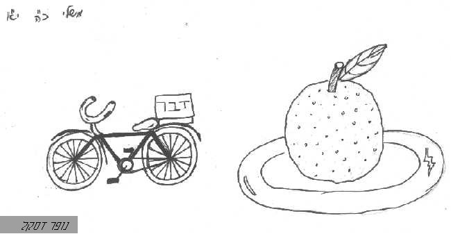

כלים כלליים
אוֹב1
- = בעל אוב זה פיתום כו', סנהדרין סה. [שבי"ל]
- אוב, ידעוני / דוד גלמן
אוֹפַן
- = גלגל [שבי"ל]
- 
- מלך חכם נלחם בפשיעה המאורגנת / אראל
אוּרים
- = ע' רש"י ורמב"ן [שבי"ל]
אזִקִּים
אלהי נכר
אלילים
- = כינוי לעבודה זרה [והשם המופשט הבא בלשון רבים הוא לעולם שמ"ת, כי שם מופשט לא יתרבה] [שבי"ל]
בעל[כ]
- = שם אליל [שבי"ל]
בְרִיח
גורל
- הגרלות בתנ"ך / אראל
- = המברר דבר למי יתייחס, והושאל לחלק ונחלה, בעבור הגורל, כמו חבל [שבי"ל]
גילולים
- = עבודה זרה, על-שם דמות כדורית מה, וע' ראב"ע ויקרא כו [שבי"ל]
- יחזקאל בחדר הסודות (2) / מחברים שונים -> מכתב
גִלגַל
- = אופן עגלה [שבי"ל]
גַלגַל
- = אופן, ובא גם נרדף לרכב ופרש, והושאל לגלגלי השמים [שבי"ל]
גָלָל
- = כלי שגוללים אותו על בני אדם להמיתם, הנהוג בימי קדם [שבי"ל]
דגֶל
- = נס המחנה לתפארת [שבי"ל]
דְמֶשֶׁק
- = נרדף לפאה. וע' רש"י עמוס ג12 [שבי"ל]
דרבן
- = מלמד הבקר. מלמד הוא דרבן מרדע, רש"י שופטים ג. וכך הוא במדרש רבה ויקרא פכ"ט: "3 שמות נקרא לו: מלמד מרדע דרבן". אבל בדברי חז"ל (כלים פ"ט) "מלמד שבלע את הדרבן", אם כן מלמד איננו יתד הדרבן, וכך כתב רד"ק [שבי"ל]
הגדרת הגינה
- = תרגם יונתן "דוכן לואי" [שבי"ל]
הגינה
הדום
- = כיסא קטן תחת הרגליים [שבי"ל]
וָו
- = רק ברבים "ווים" [שבי"ל]
- [באה רק בספר שמות] / מוטי אהרוני (MOTI_AHARONI @ WALLA.CO.IL) -> האתר
זִקִּים
זֵר
חוּט
- = כמו פתיל [שבי"ל]
חותם
- = טבעת שחותמין בו כתבים [שבי"ל]
- קללת החותם / אראל -> לא גמור בכלל
חותמת
- = "חותם" בלשון נקבה [שבי"ל]
חַח
חיִץ
- = תרגמו יונתן "מחיצה" [שבי"ל]
חישוק
חַכָּה
- = כמין מחט כפוף, ונכנס בפי הדג בחכו, ומושכין אותו בו [שבי"ל]
חַמָּן
- = עבודה זרה לעובדי שמש [שבי"ל]
חרוץ[כ]
ידוֹת
- = דבר היוצא מדבר, כמין יד בציר הדלת וכיוצא בזה, והושאל גם לחלקים היוצאים מן הכלל [שבי"ל]
יצוע
- = כמו משכב, על שם שמציעין אותו על-ידי לבדין כו', רש"י [שבי"ל]
יתֵד
- = מסמר [שבי"ל]
כֶבֶל
- = סד לאסור הרגליים [שבי"ל]
- [באה רק בספר תהלים] / מוטי אהרוני -> האתר
כְבָרָה
כֶבֶש
- = במקומו במל"א "ראש עגול לכיסא מאחריו", עשוי לכנוס בו כל גופו כאילו הוא כבוש ותפוש בו [שבי"ל]
כַוָּן
- = רק ברבים "כֵוָּנִים"; דפוס הכוכב (רש"י) [שבי"ל]
- [באה רק בספר ירמיהו] / מוטי אהרוני (MOTI_AHARONI @ WALLA.CO.IL) -> האתר
כִיּוּן
- = שם עבודה זרה, רש"י עמוס ה26 [שבי"ל]
- המכמתת = עמק סוכות / אביתר כהן -> האתר
כיסא
- = כלי מושב נכבד [שבי"ל]
- תפקידיו של השלטון - משפט וחסד
כישור
- = כלי המכשיר את הפלך לטוות, רש"י משלי לא19 [שבי"ל]
כלי
כלי - כללי
- הגלוי והמכוסה במגילת אסתר / א' הראל פיש -> שירת מקרא, הוצאת אוניברסיטת בר-אילן, פורסם ב"שדה חמד" התשנ"ד גיליון ג-ד
- כה הראני ה' אלוקים / יהושע רוזנברג -> קול ישראל
- עלייתה ושקיעתה של הממלכה הפרסית הקדומה / שמואל חגי -> מחניים ע"ט
- רפואת הנפש ורפואת הגוף / אראל -> לא גמור
- שתי תקופות במלכות שלמה / אראל -> פו"ס 11
כַן
כֵן[כ]
- = על משקל "קן" [שבי"ל]
כַנָּה
כַפֹּרֶת
- = מכסה לארון העדות [שבי"ל]
כפתור
- = כמין תפוח עגול לנוי [שבי"ל]
- = פרח כפות, סגור / אביתר כהן -> האתר
כר[כ]
- = מרדעת [שבי"ל]
כָרים
כרכוב
- = מקיף, שוליים; סובב המזבח / סיגל
- [באה רק בספר שמות] / מוטי אהרוני (MOTI_AHARONI @ WALLA.CO.IL) -> האתר
לוֹט
מאזני מרמה
מאזני רשע
מאזניים
מגרפה
- = רחת עשוי לזרייה וזריקת התבואה [שבי"ל]
מוֹט[כ]
- = בד עץ הניתן על השכם לשאת עליו משא, על-שם שהנושא אותו ימוט וימעד תחתיו [שבי"ל]
- במ יג 23 / סיגל (צילמה) -> תקרת קניון קסטרא
מוטה
- = "מוט" בלשון נקבה [שבי"ל]
מוֹסרות
מוקשות
- = "מוקש" בלשון נקבה רבות [שבי"ל]
מזלג
- = כלי בעל שיניים לתחוב בו בשר [שבי"ל]
מזרה
- = כלי שזורים בו את התבואה [שבי"ל]
מחוגה
- = כלי לעשיית חוג [שבי"ל]
מטאטא
מטֶה
- = מקל למשען עליו, והוא גם שבט, שהוא למשען יותר מאחרים [שבי"ל]
- מכות מצרים - נטית יד ומטה / -> פו"ס מכות מצרים - לא גמור
מטיל
- = חתיכה או משא [שבי"ל]
מיטָה
- = ערש שנוטים עליו בשכיבה [שבי"ל]
- מש כו 14 / חני סגל
מִכבַר
מַכבר
- = ת"י "גונבא", והוא שמיכה [שבי"ל]
מכונה
- = כלי למושב הכיור [שבי"ל]
מכמורת
מִכמר
מַכמֹר
מכמֶרת
מכסה
מֹלך
מלכֹם
מלכת השמים
מלמד
- = דרבן המלמד הבקר לחרישה [שבי"ל]
מלקחיים
מנור
- = יתד האורג [שבי"ל]
מנקיות
- = ע' רש"י שמות כה [שבי"ל]
מסגרת
- = תרגם אונקלוס "גדנפא", שסוגר השולחן [שבי"ל]
מסכה
- = פסל נסוך ממתכות, ויש לשון ממשלה או מכסה [שבי"ל]
מסכת
- = עץ שהגרדי כו' אנשובל"א כו', רש"י שופטים טז. ובלשון משנה - כובד עליון ותחתון, ואולי עשוי במתכות [שבי"ל]
- [באה רק בספר שופטים] / מוטי אהרוני (MOTI_AHARONI @ WALLA.CO.IL)
מסמֵר
- = יתד, שמסמר ומעמיד הדבר שלא יימוט [שבי"ל]
מסמַר
מפּוּח
- = כלי שמפיחין בו את האש [שבי"ל]
מפלצת
- = ת"י "טעוותא" [שבי"ל]
מפתֵח
- = כלי הפותח הדלת [שבי"ל]

מצע
- = בדין וסדינין [שבי"ל]
מקוֵא
מקֵל
- = נרדף לחוטר ומטה [שבי"ל]
מרבד
- = מצעות נאות [שבי"ל]
- [באה רק בספר משלי] / מוטי אהרוני
מִשּוֹט
מָשוֹט
משׂמֵר
משענת
משקולת
- = חוט שהבונים קושרים בו עופרת כו', רש"י [שבי"ל]
מתֶג
- = כלי לחסימת פה של חיה / אראל -> פו"ס 9
- = נרדף ל"רסן" [שבי"ל]
נחושתיים
- = "שלשלן דנחש" [שבי"ל]
נחושתן
- = שם פרטי לנחש נחושת שעשה משה [שבי"ל]
נֵס
- = כלונס המרומם על מקום גבוה, והושאל לאות גם לרוממות [שבי"ל]
סַד
- = כבל [שבי"ל]
- [באה רק בספר איוב] / מוטי אהרוני
סוגר
- = ת"י "קולרין" [שבי"ל]
סולם

סִכּוּת
- = עבודה זרה [שבי"ל]
- המכמתת = עמק סוכות / אביתר כהן -> האתר
סרֶן2
- = כמו נסר [רק בסמיכות "סרני-"] [שבי"ל]
עֹל
עליל
עֶצֶב2
עֹצֶב2
עקרבים
- = קוצים שעוקצין כעקרב [שבי"ל]
ערֶשׂ
- = נרדף למיטה [שבי"ל]
- דמותו של עוג בפרשנות האגדה של ימי הביניים / אדמיאל קוסמן -> אתר אוניברסיטת בר אילן
ערשׂות
- = "ערֶשׂ" בלשון נקבה [שבי"ל]
עשתורת
פגרי גילוליכם
פוּר
פַח1
פטיש
- = כלי המכה [שבי"ל]
פלֶך1
פלֶס
פסיל
פֶסֶל
- = דבר שנפסל על צורה מה, ורובו לעבודה זרה [שבי"ל]
פעוֹר
- = עבודה זרה מה [שבי"ל]
פעמות
- = העשויות כרגליים לדריסה, ראב"ע ע' שם, וע' רמב"ן [שבי"ל]
פצירה
- = "פצירה פים" - שם כלי [שבי"ל]
פרוכת
פְתיל
- = חוט [שבי"ל]
פָתיל
צינור
- = מרזב [שבי"ל]
צמיד פתיל
- = מכסה צמוד ומחובר לכלי
צנתרות
צעצוע
- [רק בריבוי "צעצועים"] [שבי"ל]
קו
קלשון
- = כלי שלוש השיניים לזבל [שבי"ל]
קרסים
- = כלי שראשיו כפופים לתפוש בלולאות [שבי"ל]
- [באה רק בספר שמות] / מוטי אהרוני (MOTI_AHARONI @ WALLA.CO.IL) -> האתר
קשָׂוֹת
רחת
- = כלי מזרה התבואה ברוח [שבי"ל]
רסֶן
- = נרדף למתג [שבי"ל]
רפידה
- = מצע [שבי"ל]
רשֶת
- = פח עשוי מעשה שבכה [שבי"ל]
רתוֹק
- = כלי מאסר [שבי"ל]
רַתּוּק
- = תרגם יונתן "שלשלן" = שלשלאות [רק בריבוי "רתוקות"] [שבי"ל]
רָתוּק
- [רק בריבוי "רתוקות"; על-משקל "עצום"] [שבי"ל]
שֵבֶט
- = נרדף למטה, אם למטה משפחה או למטה וחוטר [שבי"ל]
- עונשים גופניים - רק למי שאינו מסוגל לשמוע ביקורת / אראל
שבט מוסר
שוֹט
שולחן

{kind=link}
{kind=link}
{kind=link}
{kind=link}
{kind=link}
{kind=link}
{kind=link}
{kind=link}
שֹטֵט
שיקוץ
- = כינוי לעבודה זרה [שבי"ל]
שמשה
שֶׂרֶד
- = ת"י "משקלותא" [שבי"ל]
תורן
- = עץ זקוף וגבוה, נרדף ל"נס" [שבי"ל]
תמוז
- = עבודה-זרה מה [שבי"ל]
תֻמים
- = ע' רש"י ורמב"ן שמות כח [שבי"ל]